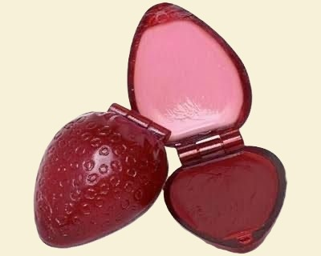
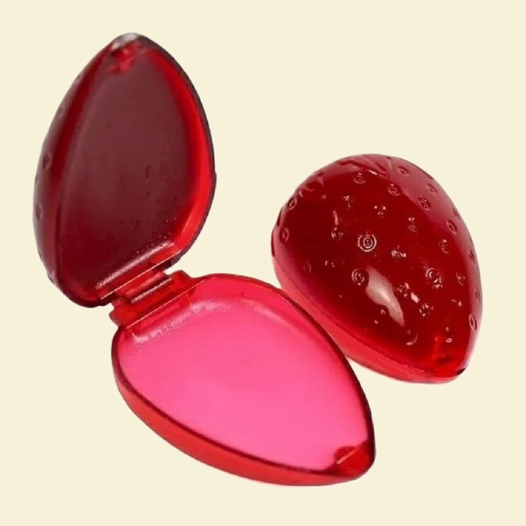

UM PEDACINHO DE CADA GERAÇÃO
O brilho labial de moranguinho é uma das maiores relíquias da beleza nacional, unindo gerações pelo cheiro doce e o formato icônico.
Conheça a história
FEITO PARA LEMBRAR
Com duas partes em um só produto, ele representa uma época em que pequenos objetos do dia a dia também tinham personalidade. O brilho de moranguinho de dois lados é o maior ícone da maquiagem nostálgica no Brasil. Lançado pela Avon nos anos 80 e 90, o potinho com um lado cremoso e outro perolado virou febre nas escolas. Nos anos 2000, o formato migrou para as lojinhas de R$ 1,99 em versões genéricas. Já nos anos 2010, marcas populares como Vivai e Jasmyne profissionalizaram essas réplicas, injetando muito mais glitter e dominando a internet

A ESTÉTICA